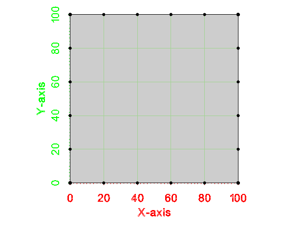
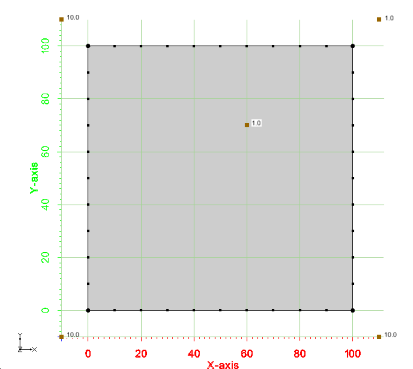
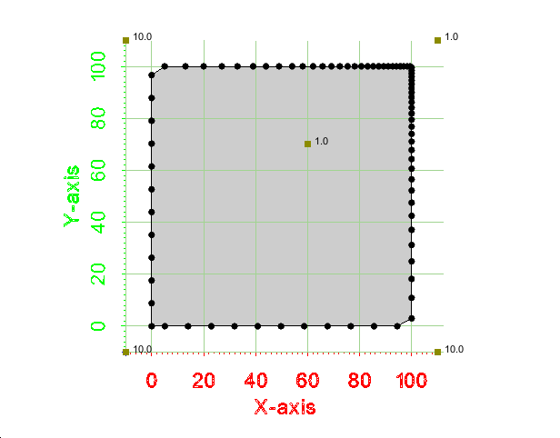

Redistribution Tutorial
Introduction
The purpose of this tutorial is to provide explanation on how to use the classes defined in xmsmesh to redistribute the points on a polyline according to a size function or curvature.
Example - Redistribute Simple Polygon to Constant Size
This first example shows how to redistribute a single polygon. A picture of the example is shown below. Notice that the polygon is a simple square from (0,0) to (100,100). Also notice that the point spacing along the boundary is a constant value of 10. We will redistribute the boundary to a new constant size of 20.0.

Simple Polygon with boundary spacing = 10.0
The basic steps to redistribute polygon points are:
- Define the polygon as a vector of points.
- Setup the MePolyRedistributePts class and call the Redistribute method.
{
xms::VecPt3d polygon = {{0, 0}, {0, 10}, {0, 20}, {0, 30}, {0, 40}, {0, 50},
{0, 60}, {0, 70}, {0, 80}, {0, 90}, {0, 100}, {10, 100},
{20, 100}, {30, 100}, {40, 100}, {50, 100}, {60, 100}, {70, 100},
{80, 100}, {90, 100}, {100, 100}, {100, 90}, {100, 80}, {100, 70},
{100, 60}, {100, 50}, {100, 40}, {100, 30}, {100, 20}, {100, 10},
{100, 0}, {90, 0}, {80, 0}, {70, 0}, {60, 0}, {50, 0},
{40, 0}, {30, 0}, {20, 0}, {10, 0}, {0, 0}};
redist->SetConstantSizeFunc(20.0);
xms::VecPt3d outPts = redist->Redistribute(polygon);
{
xms::VecPt3d expectedPts = {
{0, 0, 0}, {0, 20, 0}, {0, 40, 0}, {0, 60, 0}, {0, 80, 0}, {0, 100, 0},
{20, 100, 0}, {40, 100, 0}, {60, 100, 0}, {80, 100, 0}, {100, 100, 0}, {100, 80, 0},
{100, 60, 0}, {100, 40, 0}, {100, 20, 0}, {100, 0, 0}, {80, 0, 0}, {60, 0, 0},
{40, 0, 0}, {20, 0, 0}, {0, 0, 0}};
}
}
An image of the redistributed polygon from this example is shown below.

Redistributed output polygon with boundary spacing = 20.0
Example - Redistribute Simple Polygon with a Size Function
This example show how to redistribute a polygon boundary using a size function. The size function is specified using xms::InterpBase. The InterpBase class performs spatial interpolation from points and triangles. This example uses a simple polygon with a set of 5 points and 4 triangles to define a linear size function.A picture of the example is shown below.

Simple polygon with linear size function
{
xms::VecPt3d polygon = {{0, 0}, {0, 10}, {0, 20}, {0, 30}, {0, 40}, {0, 50},
{0, 60}, {0, 70}, {0, 80}, {0, 90}, {0, 100}, {10, 100},
{20, 100}, {30, 100}, {40, 100}, {50, 100}, {60, 100}, {70, 100},
{80, 100}, {90, 100}, {100, 100}, {100, 90}, {100, 80}, {100, 70},
{100, 60}, {100, 50}, {100, 40}, {100, 30}, {100, 20}, {100, 10},
{100, 0}, {90, 0}, {80, 0}, {70, 0}, {60, 0}, {50, 0},
{40, 0}, {30, 0}, {20, 0}, {10, 0}, {0, 0}};
BSHP<xms::VecPt3d> sPts(new xms::VecPt3d());
*sPts = {{-10, -10, 10}, {-10, 110, 10}, {110, 110, 1}, {110, -10, 10}, {60, 70, 1}};
BSHP<xms::VecInt> sTris(new xms::VecInt());
*sTris = {0, 4, 1, 1, 4, 2, 2, 4, 3, 3, 4, 0};
linear->SetPtsTris(sPts, sTris);
redist->SetSizeFunc(linear);
xms::VecPt3d outPts = redist->Redistribute(polygon);
{
xms::VecPt3d expectedPts = {
{0.000, 0.000, 0}, {0.000, 8.794, 0}, {0.000, 17.574, 0}, {0.000, 26.355, 0},
{0.000, 35.135, 0}, {0.000, 43.916, 0}, {0.000, 52.697, 0}, {0.000, 61.477, 0},
{0.000, 70.258, 0}, {0.000, 79.038, 0}, {0.000, 87.819, 0}, {0.000, 96.599, 0},
{5.230, 100.000, 0}, {13.015, 100.000, 0}, {20.214, 100.000, 0}, {26.898, 100.000, 0},
{33.102, 100.000, 0}, {38.864, 100.000, 0}, {44.212, 100.000, 0}, {49.181, 100.000, 0},
{53.794, 100.000, 0}, {58.079, 100.000, 0}, {62.059, 100.000, 0}, {65.757, 100.000, 0},
{69.192, 100.000, 0}, {72.382, 100.000, 0}, {75.348, 100.000, 0}, {78.104, 100.000, 0},
{80.666, 100.000, 0}, {83.046, 100.000, 0}, {85.260, 100.000, 0}, {87.319, 100.000, 0},
{89.234, 100.000, 0}, {91.015, 100.000, 0}, {92.672, 100.000, 0}, {94.214, 100.000, 0},
{95.649, 100.000, 0}, {96.986, 100.000, 0}, {98.230, 100.000, 0}, {99.390, 100.000, 0},
{100.000, 99.523, 0}, {100.000, 98.406, 0}, {100.000, 97.223, 0}, {100.000, 95.963, 0},
{100.000, 94.609, 0}, {100.000, 93.156, 0}, {100.000, 91.594, 0}, {100.000, 89.915, 0},
{100.000, 88.111, 0}, {100.000, 86.172, 0}, {100.000, 84.087, 0}, {100.000, 81.844, 0},
{100.000, 79.431, 0}, {100.000, 76.836, 0}, {100.000, 74.044, 0}, {100.000, 71.040, 0},
{100.000, 67.806, 0}, {100.000, 64.327, 0}, {100.000, 60.580, 0}, {100.000, 56.547, 0},
{100.000, 52.206, 0}, {100.000, 47.530, 0}, {100.000, 42.497, 0}, {100.000, 37.076, 0},
{100.000, 31.239, 0}, {100.000, 24.951, 0}, {100.000, 18.178, 0}, {100.000, 10.884, 0},
{100.000, 3.028, 0}, {94.462, 0.000, 0}, {85.520, 0.000, 0}, {76.579, 0.000, 0},
{67.638, 0.000, 0}, {58.696, 0.000, 0}, {49.755, 0.000, 0}, {40.814, 0.000, 0},
{31.873, 0.000, 0}, {22.931, 0.000, 0}, {13.990, 0.000, 0}, {5.049, 0.000, 0},
{0.000, 0.000, 0}};
}
}
An image of the redistributed polygon from this example is shown below.

Redistributed polygon from size function
Example - Redistribute Simple Polyline using Curvature
This example shows how to redistribute a polyline using curvature. The following variables must be specified when using curvature: feature size, mean spacing, minimum curvature, and smoothing. "Feature size" is the size of the smallest feature in the polyline to be detected. "Mean spacing" is the mean spacing between the distributed points. "Minimum curvature" is the value of the curvature to be used instead of 0 in straight lines. "Smoothing" detemines if the curvatures are to be averaged by a rolling 0.25-0.5-0.25 weighted rolling average. A picture of the input polyline is shown below. We will redistribute with a feature size of 3.0, a mean spacing of 0.5, a minimum curvature of 0.0001, and no smoothing.
{
xms::VecPt3d polyline = {{0, 0, 0}, {5, 5, 0}, {10, 10, 0}, {15, 5, 0},
{20, 10, 0}, {21, 10, 0}, {25, 0, 0}};
double featureSize(3.0), meanSpacing(0.5), minimumCurvature(.0001);
bool smooth(false);
redist->SetUseCurvatureRedistribution(featureSize, meanSpacing, minimumCurvature, smooth);
xms::VecPt3d outPts = redist->Redistribute(polyline);
{
xms::VecPt3d expectedPts = {
{0.000, 0.000, 0}, {9.526, 9.526, 0}, {9.582, 9.582, 0}, {9.639, 9.639, 0},
{9.695, 9.695, 0}, {9.751, 9.751, 0}, {9.808, 9.808, 0}, {9.864, 9.864, 0},
{9.921, 9.921, 0}, {9.977, 9.977, 0}, {10.034, 9.966, 0}, {10.090, 9.910, 0},
{10.146, 9.854, 0}, {10.203, 9.797, 0}, {10.259, 9.741, 0}, {10.316, 9.684, 0},
{10.372, 9.628, 0}, {10.429, 9.571, 0}, {10.485, 9.515, 0}, {14.481, 5.519, 0},
{14.537, 5.463, 0}, {14.594, 5.406, 0}, {14.650, 5.350, 0}, {14.707, 5.293, 0},
{14.763, 5.237, 0}, {14.819, 5.181, 0}, {14.876, 5.124, 0}, {14.932, 5.068, 0},
{14.989, 5.011, 0}, {15.045, 5.045, 0}, {15.102, 5.102, 0}, {15.158, 5.158, 0},
{15.215, 5.215, 0}, {15.271, 5.271, 0}, {15.327, 5.327, 0}, {15.384, 5.384, 0},
{15.440, 5.440, 0}, {15.497, 5.497, 0}, {19.484, 9.484, 0}, {19.518, 9.518, 0},
{19.552, 9.552, 0}, {19.587, 9.587, 0}, {19.621, 9.621, 0}, {19.655, 9.655, 0},
{19.690, 9.690, 0}, {19.724, 9.724, 0}, {19.759, 9.759, 0}, {19.793, 9.793, 0},
{19.827, 9.827, 0}, {19.862, 9.862, 0}, {19.896, 9.896, 0}, {19.930, 9.930, 0},
{19.965, 9.965, 0}, {19.999, 9.999, 0}, {20.047, 10.000, 0}, {20.096, 10.000, 0},
{20.144, 10.000, 0}, {20.193, 10.000, 0}, {20.242, 10.000, 0}, {20.790, 10.000, 0},
{20.838, 10.000, 0}, {20.886, 10.000, 0}, {20.934, 10.000, 0}, {20.982, 10.000, 0},
{21.011, 9.972, 0}, {21.029, 9.928, 0}, {21.047, 9.883, 0}, {21.065, 9.839, 0},
{21.082, 9.794, 0}, {21.100, 9.749, 0}, {21.118, 9.705, 0}, {21.136, 9.660, 0},
{21.154, 9.616, 0}, {21.172, 9.571, 0}, {21.189, 9.527, 0}, {21.207, 9.482, 0},
{21.225, 9.437, 0}, {21.243, 9.393, 0}, {21.261, 9.348, 0}, {25.000, 0.000, 0}};
}
}
An image of the redistributed polyline from this example is shown below.
Example - Redistribute Simple Polygon using Curvature
This example shows how to redistribute a polygon. It is the same as the previous example except that this is a closed polygon instead of a polyline. The input is shown below.
{
xms::VecPt3d polyline = {{0, 0, 0}, {5, 5, 0}, {10, 10, 0}, {15, 5, 0},
{20, 10, 0}, {21, 10, 0}, {25, 0, 0}, {0, 0, 0}};
double featureSize(3.0), meanSpacing(0.5), minimumCurvature(.0001);
bool smooth(false);
redist->SetUseCurvatureRedistribution(featureSize, meanSpacing, minimumCurvature, smooth);
xms::VecPt3d outPts = redist->Redistribute(polyline);
{
xms::VecPt3d expectedPts = {
{0.000, 0.000, 0}, {0.042, 0.042, 0}, {0.084, 0.084, 0}, {0.126, 0.126, 0},
{0.168, 0.168, 0}, {0.210, 0.210, 0}, {0.252, 0.252, 0}, {0.294, 0.294, 0},
{0.336, 0.336, 0}, {0.378, 0.378, 0}, {0.420, 0.420, 0}, {0.462, 0.462, 0},
{0.505, 0.505, 0}, {9.491, 9.491, 0}, {9.546, 9.546, 0}, {9.601, 9.601, 0},
{9.655, 9.655, 0}, {9.710, 9.710, 0}, {9.765, 9.765, 0}, {9.820, 9.820, 0},
{9.875, 9.875, 0}, {9.930, 9.930, 0}, {9.985, 9.985, 0}, {10.040, 9.960, 0},
{10.095, 9.905, 0}, {10.150, 9.850, 0}, {10.205, 9.795, 0}, {10.260, 9.740, 0},
{10.315, 9.685, 0}, {10.370, 9.630, 0}, {10.424, 9.576, 0}, {10.479, 9.521, 0},
{14.474, 5.526, 0}, {14.529, 5.471, 0}, {14.584, 5.416, 0}, {14.639, 5.361, 0},
{14.693, 5.307, 0}, {14.748, 5.252, 0}, {14.803, 5.197, 0}, {14.858, 5.142, 0},
{14.913, 5.087, 0}, {14.968, 5.032, 0}, {15.023, 5.023, 0}, {15.078, 5.078, 0},
{15.133, 5.133, 0}, {15.188, 5.188, 0}, {15.243, 5.243, 0}, {15.298, 5.298, 0},
{15.353, 5.353, 0}, {15.408, 5.408, 0}, {15.462, 5.462, 0}, {15.517, 5.517, 0},
{19.495, 9.495, 0}, {19.529, 9.529, 0}, {19.562, 9.562, 0}, {19.596, 9.596, 0},
{19.629, 9.629, 0}, {19.662, 9.662, 0}, {19.696, 9.696, 0}, {19.729, 9.729, 0},
{19.763, 9.763, 0}, {19.796, 9.796, 0}, {19.830, 9.830, 0}, {19.863, 9.863, 0},
{19.897, 9.897, 0}, {19.930, 9.930, 0}, {19.964, 9.964, 0}, {19.997, 9.997, 0},
{20.043, 10.000, 0}, {20.090, 10.000, 0}, {20.138, 10.000, 0}, {20.185, 10.000, 0},
{20.232, 10.000, 0}, {20.779, 10.000, 0}, {20.826, 10.000, 0}, {20.873, 10.000, 0},
{20.919, 10.000, 0}, {20.966, 10.000, 0}, {21.005, 9.988, 0}, {21.022, 9.945, 0},
{21.039, 9.901, 0}, {21.057, 9.858, 0}, {21.074, 9.815, 0}, {21.092, 9.771, 0},
{21.109, 9.728, 0}, {21.126, 9.684, 0}, {21.144, 9.641, 0}, {21.161, 9.598, 0},
{21.178, 9.554, 0}, {21.196, 9.511, 0}, {21.213, 9.467, 0}, {21.230, 9.424, 0},
{21.248, 9.381, 0}, {21.265, 9.337, 0}, {24.727, 0.682, 0}, {24.752, 0.621, 0},
{24.776, 0.559, 0}, {24.801, 0.498, 0}, {24.826, 0.436, 0}, {24.850, 0.375, 0},
{24.875, 0.313, 0}, {24.899, 0.251, 0}, {24.924, 0.190, 0}, {24.949, 0.128, 0},
{24.973, 0.067, 0}, {24.998, 0.005, 0}, {24.939, 0.000, 0}, {24.873, 0.000, 0},
{24.806, 0.000, 0}, {24.740, 0.000, 0}, {24.674, 0.000, 0}, {24.607, 0.000, 0},
{24.541, 0.000, 0}, {24.475, 0.000, 0}, {24.408, 0.000, 0}, {24.342, 0.000, 0},
{24.276, 0.000, 0}, {0.713, 0.000, 0}, {0.654, 0.000, 0}, {0.595, 0.000, 0},
{0.535, 0.000, 0}, {0.476, 0.000, 0}, {0.416, 0.000, 0}, {0.357, 0.000, 0},
{0.297, 0.000, 0}, {0.238, 0.000, 0}, {0.178, 0.000, 0}, {0.119, 0.000, 0},
{0.059, 0.000, 0}, {0.000, 0.000, 0}};
}
}
An image of the redistributed polygon from this example is shown below.